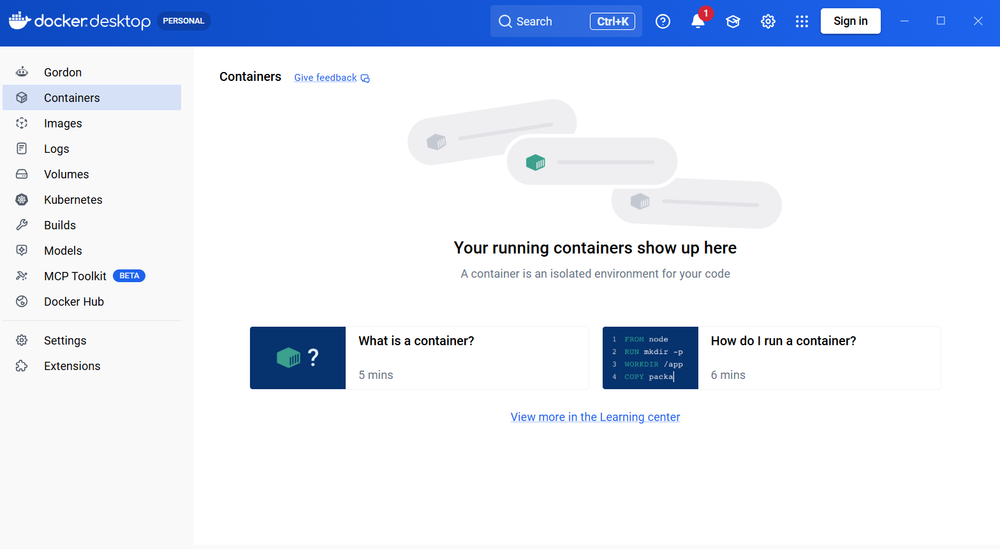
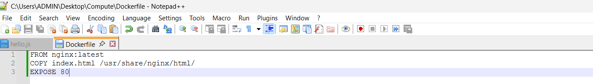
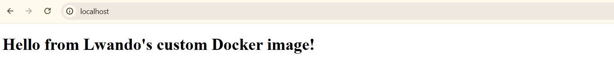
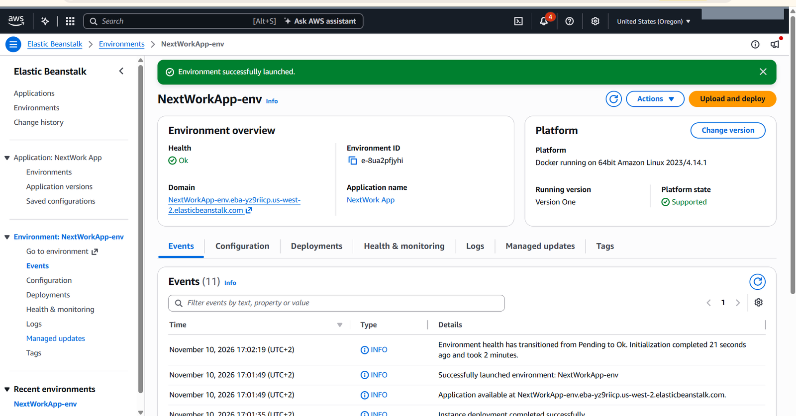

Containers · Docker · Elastic Beanstalk · November 2026 · NextWork guided project
Deploy an app with Docker and AWS Elastic Beanstalk
Installed Docker Desktop, ran an Nginx container, built my own container image from a Dockerfile, and deployed the containerised app to AWS Elastic Beanstalk in us-west-2, where the environment reached a healthy state.
- Installed Docker Desktop and learned how images, containers and the Docker daemon fit together.
- Ran the official Nginx image with
docker run -d -p 80:80 nginxand confirmed the welcome page at localhost. - Wrote a Dockerfile (
FROM nginx:latest,COPY index.html /usr/share/nginx/html/,EXPOSE 80) and built a custom image withdocker build. - Fixed a port conflict: the first container was already using port 80, so I stopped it before starting the custom one.
- Created an Elastic Beanstalk application and environment on the Docker platform (Amazon Linux 2023) and deployed the image; the environment launched with health OK in about five minutes.
Hardest part: setting up the Elastic Beanstalk environment. Total time: about 2 hours 30 minutes.
Account details are covered in the PDF.
Read the PDF here on the pageHide the PDF
PDF not showing? Some phones cannot display a PDF inside a page. Open it in a new tab or download it.
Install Docker Desktop

Build and run a custom image


Deploy to Elastic Beanstalk
